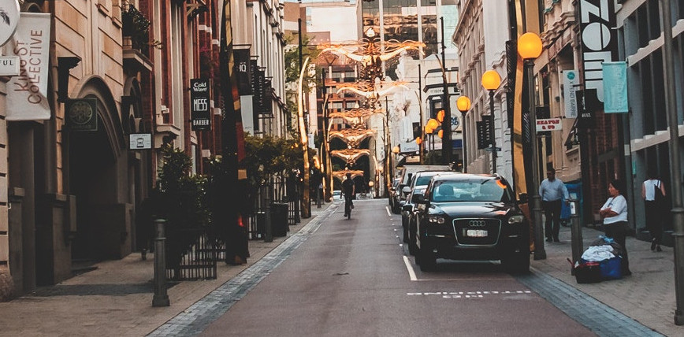
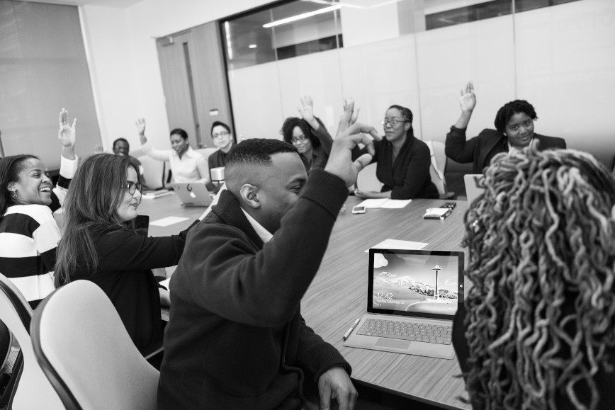

Basauer Wochenzeitung
Frei und Unabhängig

Basau will Umsteigen - Von dreckig auf sauber
Mit diesem Motto startete eine 9te Klasse am Kopernikus-Gymnasium-Bargteheide in das physikalische Planspiel, welches von Herrn Peters geleitet wird. Es findet in dem Fantasie-Dorf Basau statt, welches sich in Zukunft mit eigens generiertem Strom versorgen soll. Dabei spielen die Schüler Bürgermeister, Ingenieur, Gegner von Kraftwerken und Journalist. Durch diese „spielerische Art“ können sich die Schüler in einer kreativen Weise über verschiedene Kraftwerksarten informieren. Durch das Aufteilen in Experten-Gruppen, die sich über spezielle Themen genau informieren und die Mitschüler über diesen Themenbereich später aufklären, ist es möglich, sich tiefgehend mit der Materie zu beschäftigen und dennoch einen guten Überblick zu bewahren... Lesen sie hier mehr.
Vorbereitungen eines wichtigen Tages in Basau
Die ganze Arbeit wird an einem Tag zusammengeführt: Der Tag der Entscheidung. Geleitet wird dieser von den Bürgermeisterinnen, die diesen zuvor vorbereitet haben. Die Ingenieure halten mit hoher wahrscheinlich direkt zu Beginn einen parteiischen Vortrag über ihr Kraftwerktyp. Danach dürfen die Gegner und Journalisten kritische Fragen und Kommentare stellen/abgeben, welche möglichst die negativen Kritikpunkte enthalten. Daraufhin startet eine Diskussionsrunde in der jeder seine Rolle einnimmt. Unter der Leitung der Bürgermeisterinnen wird am Schluss entschieden, welches der vorgestellten Kraftwerke am geeignetesten ist... Lesen sie hier mehr.
Welchen Kraftwerkstyp bevorzugst du?
Weiterleitung zum Google FormularDie Wahl ist entschieden - Basau stimmt für eigene Energiequelle
Die ganze Arbeit wird an einem Tag zusammengeführt: Der Tag der Entscheidung. Geleitet wird dieser von den Bürgermeisterinnen, die diesen zuvor vorbereitet haben. Die Ingenieure halten mit hoher wahrscheinlich direkt zu Beginn einen parteiischen Vortrag über ihr Kraftwerktyp. Danach dürfen die Gegner und Journalisten kritische Fragen und Kommentare stellen/abgeben, welche möglichst die negativen Kritikpunkte enthalten. Daraufhin startet eine Diskussionsrunde in der jeder seine Rolle einnimmt. Unter der Leitung der Bürgermeisterinnen wird am Schluss entschieden, welches der vorgestellten Kraftwerke am geeignetesten ist... Lesen sie hier mehr.
Schlussworte der Redaktion
Seit mehr als einem Monat nun schreiben wir für Sie im Rahmen der Basauer Wochenzeitung Artikel zu Neuigkeiten rund um Basau mit der Intention, Ihnen einen guten Überblick zu den verschiedenen Kraftwerken zu bieten. Nun, da die Entscheidung gefallen ist, wurde auch unser Ziel damit erfüllt. Daher stellen wir die Produktion neuer Zeitungen leider ein. Somit werden zwar keine neuen Artikel in der Basauer Wochenzeitung erscheinen, allerdings wird unsere Website voraussichtlich noch für ein Jahr lang online bleiben. In Erinnerung an diese Zeit werden wir dort mit der Zeit noch einige Updates posten. Wir bedanken uns bei Ihnen für Ihr Interesse und das großartige Feedback, das wir erhalten haben.